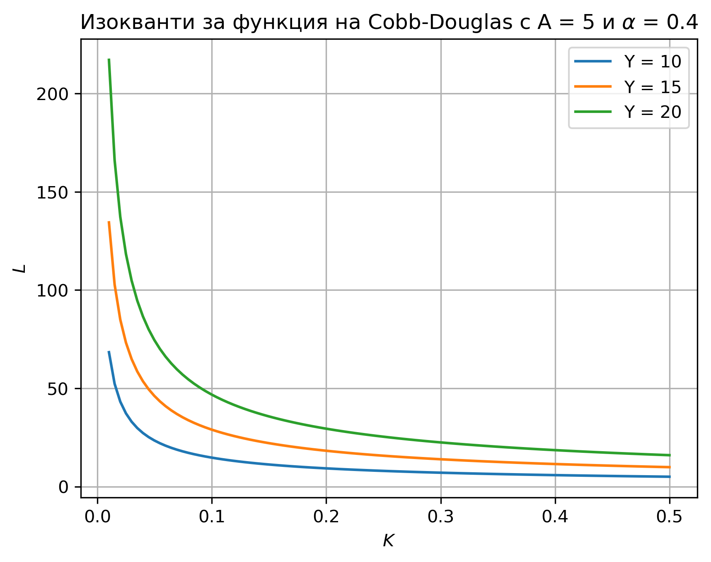
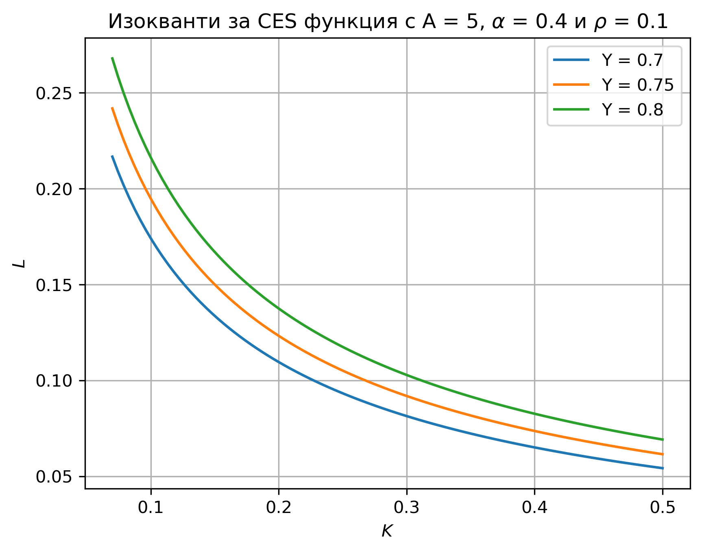
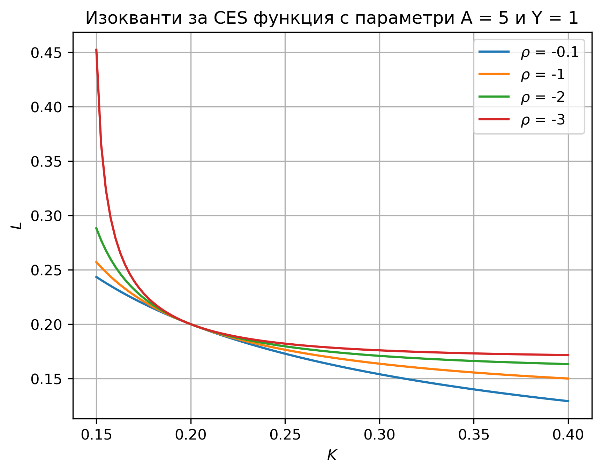

Производствени функции#
Някои често използвани производствени функции#
За всички примери за производствени функции, дадени по-долу, се приема, че производствените фактори са безкрайно делими.
Функция на Коб-Дъглас (Cobb-Douglas):
Функция на Леонтиев:
Линейна производствена функция:
Функция с постоянна еластичност на заместване (CES):
Note
По-обща форма на CES функцията е
Типично за CES функцията се допуска \(\nu = 1\) и ние го приемаме за дадено, освен ако изрично не е казано друго.
При това положение от представените функционални форми CES функцията е най-гъвкавата: при \(\rho = 1\) имаме вариант на линейна форма, при \(\rho \rightarrow 0\) се получава Коб-Дъглас, а при \(\rho \rightarrow -\infty\) се приближава функцията на Леонтиев.
Изокванти (линии на ниво)#
Изокванта за ниво на производство \(\bar{Y}\) се дефинира като
Примери за изокванти



Exercise 74
Изобразете изоквантите на функцията на Леонтиев за \(a=b=1\).
Пределни продукти на производствените фактори#
Пределният (маргинален) продукт на фактор \(X_i\) за диференцируема производствена функция \(F(X_1, \ldots, X_n)\) се дефинира като \(\dfrac{\partial F}{\partial X_i}\). Понякога за двуфакторна производствена функция с фактори труд и капитал се използват означенията съответно \(MPL\) и \(MPK\).
Exercise 75
Пресметнете пределните продукти на труда и на капитала за следните производствени функции:
функция на Коб-Дъглас
линейна функция
CES функция
Exercise 76
Проверете дали получените в Exercise 75 пределни продукти са положителни.
Note
Понякога пределните продукти за функцията на Коб-Дъглас се записват във вида
Exercise 77
Проверете, че формата на пределните продукти, дадена в предходната забележка, може да бъде получена от стандартната дефиниция.
Exercise 78
Проверете дали за следните производствени функции е в сила свойството намаляваща пределна производителност (намаляваща възвръщаемост):
функция на Коб-Дъглас
линейна функция
CES функция
Решение
Вторите производни съответно по \(L\) и \(K\) са както следва:
Коб-Дъглас
Линейна
CES
Възвръщаемост по отношение на мащаба#
Exercise 79
Кои от следните производствени функции се характеризират с постоянна възвръщаемост по отношение на мащаба?
функция на Коб-Дъглас
линейна функция
CES функция
Условия на Инада#
Exercise 80
Покажете, че за функцията на Коб-Дъглас са изпълнени условията на Инада.
Формула на Ойлер#
Exercise 81
За двуфакторна неокласическа производствена функция с труд \( L \) и капитал \( K \) е известно, че при стойност на производствения фактор \( L=10 \), имаме пределен продукт на труда със стойност \( \frac{2}{5} \) и пределен продукт на капитала със стойност \( \frac{3}{5} \). Ако обемът на производството е равен на 13, пресметнете стойността на капитала.
Решение
Използваме формулата на Ойлер:
Exercise 82
За двуфакторна неокласическа производствена функция с труд \( L \) и капитал \( K \) е известно, че при стойности на производствените фактори \( L=30 \) и \( K=50 \) имаме пределен продукт на труда със стойност \( 0.5 \). Ако обемът на производството е равен на 40, пресметнете пределния продукт на капитала.
Exercise 83
За двуфакторна неокласическа производствена функция с труд \( L \) и капитал \( K \) е известно, че при стойности на производствените фактори \( L=30 \) и \( K=50 \) имаме пределен продукт на труда (т.е. частна производна по фактора труд) със стойност \( 0.6 \). Ако обемът на производството е равен на 38, пресметнете пределния продукт на капитала.
Отговори
\(MPL = (1-\alpha)A K^\alpha L^{-\alpha}, \quad MPK = \alpha A K^{\alpha-1} L^{1-\alpha}\)
\(MPL = b, \quad MPK = b\)
\(MPL = (1-\alpha)A L^{\rho-1} [\alpha K^\rho + (1-\alpha)L^{\rho}]^{\frac{1-\rho}{\rho}}\), \(MPK = \alpha A K^{\rho-1} [\alpha K^\rho + (1-\alpha)L^{\rho}]^{\frac{1-\rho}{\rho}}\)
Exercise 79: И трите.
Exercise 82: 0.5
Exercise 83: 0.4